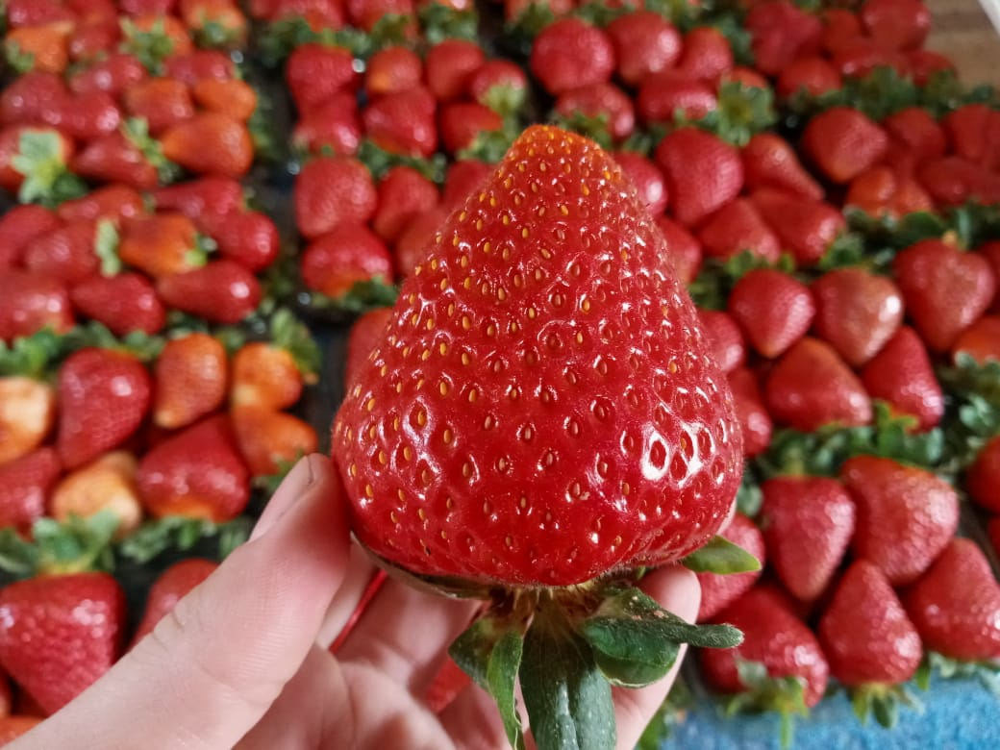
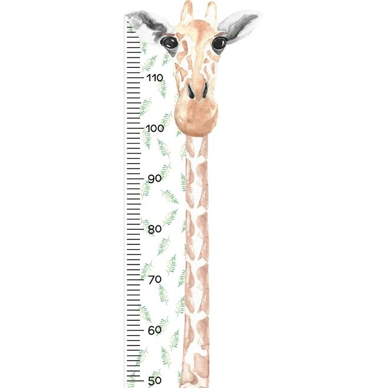
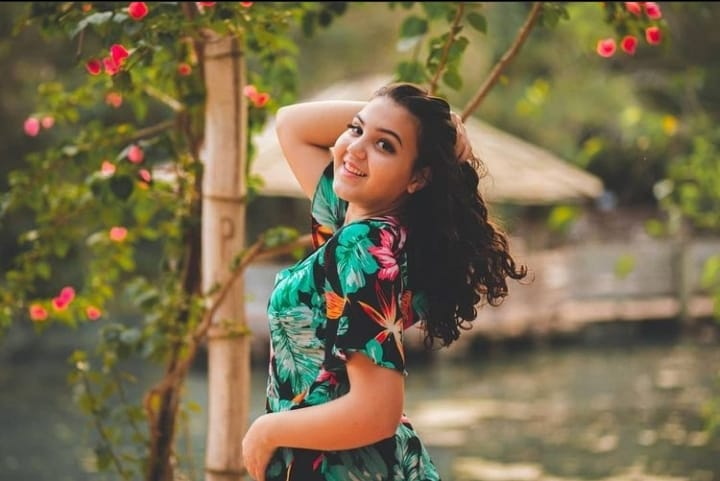
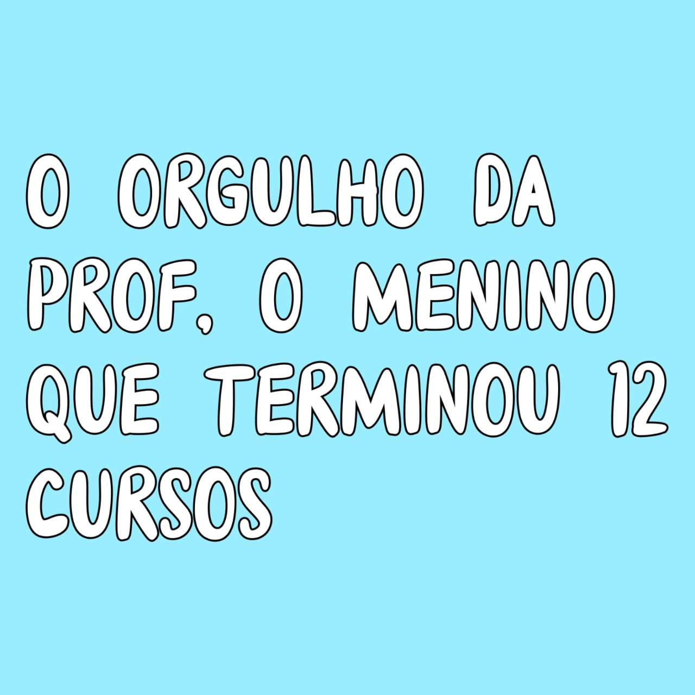

Quem dera
"Quem dera que nessa hora eu soubesse para minha senhorinha escrever um poema
Sim aquele texto cheio de rima e deveras dilemas
Aquele conteúdo do ensino médio
Que agora não tenho nada no caderno pois parecia orrivel um tédio
Agora encontro dificuldades na escrita
Para dizer que minha senhorinha e tão calma e de longe bonita
Dificuldades de como agradecer quem me apoiou
Que não me deixou desistir mesmo o mundo estando contra mim
Sao poucos os versos e rimas
Poucas palavras e poucas linhas
Para descrever o quanto a amo e sougrato
Grato por tudo ,obrigado por fazer o impossivel por mim
Peço desculpas se ficou confuso ou não muito bom
Mas fiz esse poema pensando em agradecer um bom coração
O bom coração que conheci no começo do ano
Mas que a carregarei em meu coração pela eternidade ,mesmo após a minha vida ,na paz divina descansando"
paeabens pelo seu dia!!!
Passo a semana inteira
Esperando a sexta-feira
Para te ver
E poder aprender
Te conheço a pouco tempo
Entretanto
Aprendi a te amar
E a te admirar
Você mora no meu coração
Você quem me ensinou programação
No começo era chato
Mas depois o tempo foi passando
E o sentimento mudando
Da senhorinha fui me aproximando
E de modelo você foi me chamando
Sempre me elogiando
Não sabe o tanto que te amo!
Eu não tenho muito o que dizer Só que foi muito bom te conhecer Obrigada pelo seu ensinamento e dedicação Saiba que você sempre estará no meu coração Nessas pequenas linhas eu quero lhe parabenizar Pois hoje é um dia muito especial, Então vamos comemorar Até o dia acabar.

Feliz aniversário professora thaiane , que sua vida seja cheia de bençãos vida e alegria que você continue sendo essa pessoa abençoada, calma e inteligente,seja essa pessoa cheia de alegria que nos ensinou e continua anos ensinar com calma e paciência

Feliz aniversário professora thaiane , que sua vida seja cheia de bençãos vida e alegria que você continue sendo essa pessoa abençoada, calma e inteligente,seja essa pessoa cheia de alegria que nos ensinou e continua anos ensinar com calma e paciência

Parabéns, muitas felicidades, muito amor, paz e saúde! Que este seja um dia muito alegre, este e os próximos de todo o ano, e de todos os anos da sua vida. Hoje se completa mais um ano da vida de alguém muito especial e querido: você! Feliz aniversário, querida professora!

Feliz aniversário prof.ª Thai Que todos os lindos anos de sua abençoada vida, sejam maravilhosos, repletos de muita saúde, paz e alegrias. Obrigada por fazer parte da minha vida e me ajudar nessa nova etapa em que eu descobri a programação, você não é só minha professora preferida, mas também uma pessoa que sempre nos ajuda, sempre nos escuta e cativa as minhas sexta-feira com sua alegria. Posso dizer que os melhores momentos desse ano foram em suas aulas, você é a melhor professora do mundoooo, mas também é alguém que guardo com muito carinho no coração. Obrigada por me ensinar não só como a programação é maravilhosa, mas também como ser uma boa pessoa. Desejo de todo o coração que todos os seus sonhos se realizem, porque você merece. Com todo o meu carinho, Juh
Oi prof boa tarde eu não sei nem por onde começar, bom, vou começar pelo começo. Prof eu te agradeço por tudo o que você está fazendo por nós este ano, eu agradeço muito a Deus por ele ter nos dado uma professora tão perfeita igual a você.Você é a melhor professora que eu já tive na minha vida, e eu espero que nos outros anos continuemos assim! Com muito carinho e amor, do seu aluno favorito Kauan. Beijos te amo demais!